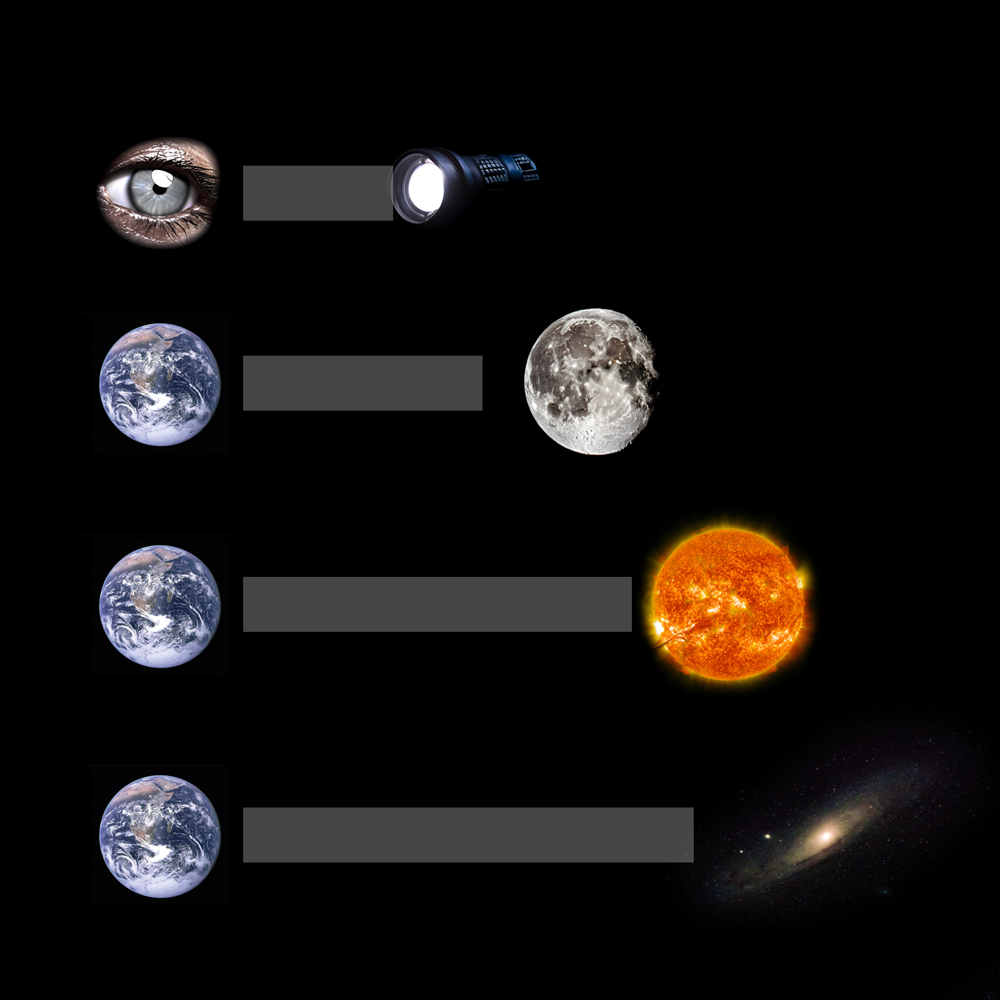

What is my research all about?
FANTASTISK. Du, en läskunnig ättling till homo sapiens efter miljontals år av evolution med en kropp bestående av atomer som ursprungligen skapades i någon stjärna långt borta, tog dig hit! Välkommen till en populärvetenskaplig beskrivning av vad min forskning handlar om. Låt oss ta på oss våra fysikglasögon och observera världen från ett nytt perspektiv. AMAZING. You, a literate descendent of homo sapiens after millions years of evolution with a body consisting of atoms originally created in some star far far away, made it here! Welcome to a popular science discription of what my research is all about. Let's take on our physics-glasses and observe the world around us from a new perspective.
Cosmology
The study of the Universe as a whole—its origin, structure, evolution, and eventual fate...
 Imagine walking home on a late summer evening. You start noticing the streetlights in the distance, roughly 100 meters away. Never before did you consider that you're actually witnessing the light source as it appeared 0.3 milliseconds ago. You're looking into the past! The reason for this fascinating phenomenon lies in one of the most fundamental principles of physics: the constancy of the speed of light, which is approximately 299,792,458 meters per second. Not only does this allow us to peer into the past, it also causes the relativity of time, as formulated within the theory of special relativity1.
While the above tiny lookback time may not impress you, let us consider some larger scales. Next to the horizon you see the moon, from which the reflected sunlight has travelled 1.3 seconds before reaching you, while the sunlight itself has travelled for an astonishing 8 minutes from the Sun (that long we would go unknowingly if the Sun was to abruptly stop emitting light). And it doesn't end there – light from the nearest (although too faint to be seen with the naked eye) star, Proxima Centauri, has traveled for 4.2465 years, and from our neighbor galaxy, Andromeda, a staggering 2.5 million years! In other words, we have no choice but to explore how the Universe looked like, not how it looks like today.
1. Special relativity unveils a fascinating aspect of reality: the perception of time varies for observers (you, me or some alien) in relative motion. Even though the nearest star is 4.2465 light years away, if you would travel at 99 percent the speed of light you would get there in less than 8 months. According to an observer staying on Earth, this could be explained by time dilation (time runs slower for the space traveller), while the space crew would explain the short journey as a consequence of length contraction (the distance to the star was shorter for them).
 Later that evening, you lose yourself in the night sky. Once a casual observer of all those white dots, you now begin to note differences in intensity and that some intensities varies over time. Your gaze shifts toward a telescope on top of a distant hill, with which you could track these luminous properties across time. With such a powerful instrument you would not only be able to decipher the type of the astronomical object – star, galaxy, supernova, or perhaps even an exoplanet - but you'd also gain access to the true treasure embedded within the bright dots: the spectrum. In fact, beyond what your eyes can see lies an extraordinary electromagnetic spectrum, stretching from the gentle microwave and radio (low energies) to the infrared, visible, and UV, all the way to the energetic X-ray and gamma rays (high energies). Different parts of the spectrum tell different storys, which is why telescopes have different targets, see Fig 1.
Later that evening, you lose yourself in the night sky. Once a casual observer of all those white dots, you now begin to note differences in intensity and that some intensities varies over time. Your gaze shifts toward a telescope on top of a distant hill, with which you could track these luminous properties across time. With such a powerful instrument you would not only be able to decipher the type of the astronomical object – star, galaxy, supernova, or perhaps even an exoplanet - but you'd also gain access to the true treasure embedded within the bright dots: the spectrum. In fact, beyond what your eyes can see lies an extraordinary electromagnetic spectrum, stretching from the gentle microwave and radio (low energies) to the infrared, visible, and UV, all the way to the energetic X-ray and gamma rays (high energies). Different parts of the spectrum tell different storys, which is why telescopes have different targets, see Fig 1.
In cosmology, we're interested in determining distances. We do this by redshift measurements, which relies on studying the spectrum across numerous narrow energy bands. Remarkably, atomic physics at the microscopic level is vital to understand how we measure vast cosmic distances. All atoms, may it be hydrogen, oxygen or gold, can only emit light in certain discrete wavelengths. Consider the atomic model shown in the figure below in (a) where electrons whirl in orbit around a nucleus. When an electron absorbs energy and transitions to an outer shell, it can subsequently descend to an inner level, releasing light in the process. The wavelength of this emitted light depends on the element's characteristics – the number of orbits and their spacing. Each element therefore has a unique emission spectrum, as exemplified in (b). In a multi-element light source, on top of the spectral continuum from thermal motion, we can thus identify distinct peaks corresponding to specific emissions, in turn allowing us to discern the presence of a particular element as shown in (c). We can also identify elements that absorbed light along the way (seen as absorption lines).


From your pocket, you bring up a black balloon. You take a breath and inflate it. Before proceeding, you make a couple of white dots on the balloon surface with your marker pen. You decide that one of them represents our galaxy, while the others represent our neighboring galaxies. As you continue inflating, you watch all galaxies move further away from each other. No matter which galaxy you are in, you will experience all other galaxies moving away from you. In a similar fashion to the 2D balloon surface, but in 3D, our Universe is expanding and all galaxies (apart from a few in our neighborhood) are moving away from us. This revelation dates back to Edwin Hubble's groundbreaking work from 1929. By linking distance measures and redshifts, he unraveled the cosmos' expansion. This inquiry persists, converging on a value of roughly 70 km/s/Mpc. This means that each Mpc1 of space increases with 70 km every second.

So, what exactly is redshift? We've grasped the art of discerning elemental compositions by analyzing emitted energy at different wavelengths. Yet, the lines in this spectrum can play a trick on us. As light voyages through our expanding Universe and the fabric of space itself stretches, the light's wavelengths also get stretched to longer wavelengths (lower energies). The magnitude of this shift, known as redshift, holds a cosmic secret: the farther a celestial body, the higher its redshift, reflecting the greater time span for expansion to stretch the light to longer wavelengths. In this way, redshift serves as a surrogate for the distance. If we are armed with an independent distance measurement, however, we enable redshift-distance examinations, which enables us to estimate the Universe's expansion rate (exactly what Hubble did).
1. Mpc (Mega Parsec) is a common distance unit in astronomy.
Spacetime dynamics. General Relativity.
Spacetime dynamics. General Relativity.
Newtonian Gravity to Einstein.
Cosmological Simulations...
Not only is the Universe mostly empty, it is also very dark. By that, I mean it contains 95% of unknown matter/energy that does not interact with or emit light...
Dark Matter: the missing matter that is dark since it does not interact with photons (light).
Dark Energy: explains the accelerated expansion of our Universe.
Imagine walking home on a late summer evening. You start noticing the streetlights in the distance, roughly 100 meters away. Never before did you consider that you're actually witnessing the light source as it appeared 0.3 milliseconds ago. You're looking into the past! The reason for this fascinating phenomenon lies in one of the most fundamental principles of physics: the constancy of the speed of light, which is approximately 299,792,458 meters per second. Not only does this allow us to peer into the past, it also causes the relativity of time, as formulated within the theory of special relativity1.
While the above tiny lookback time may not impress you, let us consider some larger scales. Next to the horizon you see the moon, from which the reflected sunlight has travelled 1.3 seconds before reaching you, while the sunlight itself has travelled for an astonishing 8 minutes from the Sun (that long we would go unknowingly if the Sun was to abruptly stop emitting light). And it doesn't end there – light from the nearest (although too faint to be seen with the naked eye) star, Proxima Centauri, has traveled for 4.2465 years, and from our neighbor galaxy, Andromeda, a staggering 2.5 million years! In other words, we have no choice but to explore how the Universe looked like, not how it looks like today.
1. Special relativity unveils a fascinating aspect of reality: the perception of time varies for observers (you, me or some alien) in relative motion. Even though the nearest star is 4.2465 light years away, if you would travel at 99 percent the speed of light you would get there in less than 8 months. According to an observer staying on Earth, this could be explained by time dilation (time runs slower for the space traveller), while the space crew would explain the short journey as a consequence of length contraction (the distance to the star was shorter for them).
To be inserted...Before moving on, did you check out all tabs? If not, go back to the "BASIC PHYSICS" menu. If yes, let's move on!
Learning the Universe
A brief history of cosmology in words and images

{kind=link}
In the cosmic orchestra of light, one melody stands out as the key to unlocking the secrets of our Universe: the cosmic microwave background (CMB). Discovered accidentally in 1965 by Arno Penzias and Robert Wilson, this faint radiation in the microwave waveband fills the entire sky. The CMB is a relic from the early days of the Universe, when it transitioned from a hot, dense state to a cooler, expanding cosmos. It measures at a chilly 2.7 Kelvin corresponding to -270.45 degrees Celsius (yes, thanks to the shape of the light spectrum from this black-body radiation we can actually compute its temperature) in all directions across the sky, with only very slight variations (anisotropies). Since these regions are too far apart to have ever been in causal contact during the finite age of the universe, their similarity in temperature poses an intriguing puzzle. The conclusion was that they share a common origin - the primordial event that birthed our universe - thus solidifying the Big Bang as the most compelling theory for the origin and evolution of the cosmos.
Accelerated expansion... The accidental detection of the cosmic microwave background (CMB) in 1965 further solidified the concept of the Big Bang Theory. With remarkable advancements in observational astronomy and technology, we have meticulously mapped millions of galaxies across the night sky.
Mapping the Universe with Multi-Billion Dollar Surveys
Angular position... Redshift...
Digital Twin of the Universe on Large Scales
Can we simulate OUR universe? For that we need not only the physical laws govering our Universe, but also the initial conditions (how everything looked like at the beginning of time).